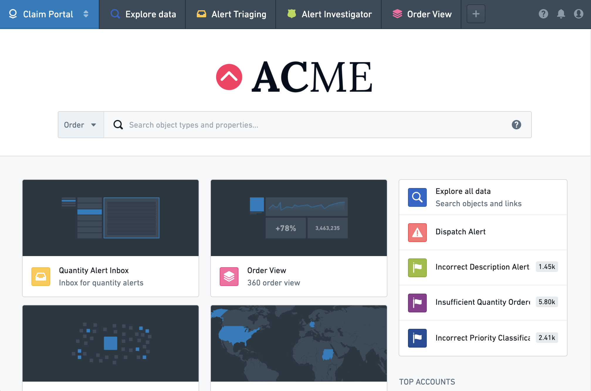

The Carbon application enables the configuration of custom platform experiences, known as workspaces, for specific user groups. Carbon can provide a focused experience for less technical users that need to carry out critical operational workflows.
For example, a Carbon workspace for aircraft parts maintenance might consist of:
Administrators can create multiple Carbon workspaces tailored to specific user profiles and governed by robust permissions. In each workspace, administrators can highlight relevant workflows and applications, selectively hide the complexity of the overall platform, and restrict navigation outside of the Carbon workspace if necessary.
Carbon workspaces have a customized landing page along with a configured set of modules. When accessing Foundry through a Carbon workspace, a user will see only the subset of applications and resources needed for a specific workflow.
This documentation covers the basics of how to create, configure, and manage Carbon workspaces, as well as examples of several different workspace configurations.

Within Foundry, access Carbon by navigating to the Applications Portal and choosing Carbon workspaces. If you have already created a Carbon workspace and promoted it as an available application, you can search for the workspace name under the Promoted apps section of the Application Portal.